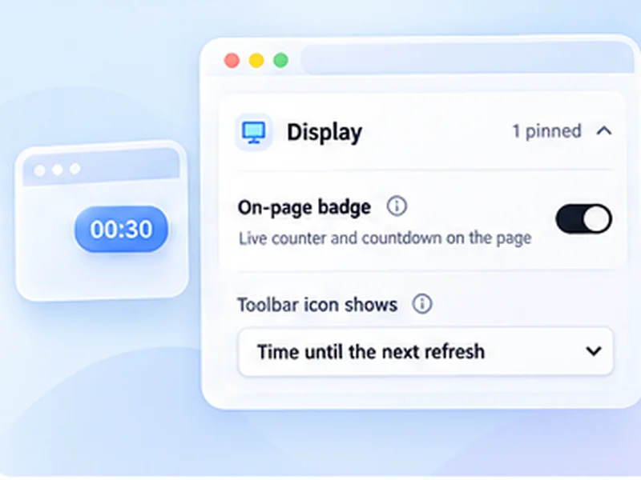

Keep quote pages current.
For quote pages that only update on reload, a timer keeps the numbers fresh and can flag a change.

How price pages works
For quote pages that only update on reload, a timer keeps the numbers fresh and can flag a change.
Page reloads are far slower than a market data feed. Do not rely on this for time-critical trading decisions, and never refresh a page in the middle of placing an order.
Quick setup
Open the quote or watchlist page.
Set Min 30 and Max 60.
Optionally watch a figure with Stop when content changes and a selector.
For pages that only update on reload
Some quote, watchlist and exchange pages do not stream prices. A one-minute refresh keeps the figures recent, and a watch rule on one number can tell you when it moves.
This is not a trading tool
Page reloads are much slower than a market data feed, and prices on free pages are often delayed. Do not rely on this for time-critical decisions, and never refresh a page while placing an order.
Private
Your watchlists and holdings are never read by or sent to anyone. Everything runs locally.
A worked example: a watchlist page
Open the watchlist, set Min 30 and Max 60, switch on Keep scroll position, and press Start. To be told when one figure moves, add Stop when content changes with a selector for that figure.
Where it is the wrong tool
- Placing or managing orders.
- Anything where seconds matter.
- Pages that already stream prices.
Auto refresh a price page safely
Use read-only quote or chart pages. Reloading a trading screen can cancel an order in progress or sign you out.
At a glance
- Fresh quotes. Reload a watchlist every minute without touching it.
- Flag a change. Watch one figure and be notified when it moves.
- Local only. No portfolio data leaves your browser.
Questions, answered.
Can it alert at a target price?
No. It tells you a watched figure changed, not the direction or amount.
How often should it refresh?
Every 30 to 60 seconds.
Will it log me out of my broker?
Reloading can interrupt some trading sessions. Use it on read-only quote pages.
Does it work on crypto exchanges?
On any page that shows the price as text.
Can it alert at a target price?
No. It reports that a watched figure changed, not which way or by how much.
Let the page check itself.
Use the free extension for Chrome or Firefox.
Have a different use case in mind?
Share the browser task you would like to make easier. Your idea helps guide what gets built next.